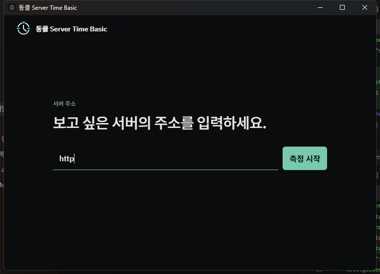

BASIC무료
일반 서버시간 확인
- 낮은 요청량
- 핵심 표본 검증
- 30분 측정 세션
WINDOWS 10 / 11 · x64
DongClock Server Time은 HTTP 응답 하나를 곧바로 정답으로 표시하지 않습니다. RTT와 여러 표본의 일관성을 살펴, 관측 가능한 범위 안에서 안정적인 서버시간을 추정합니다.
웹 서버의 HTTP 응답과 네트워크 시간을 여러 번 관찰해 서버시간을 추정하는 Windows 도구입니다.
Pro: $7 일회성 결제 · 구매일 기준 1년 · 자동 갱신 없음
한 점이 아니라 가능한 시차 범위부터 계산합니다.
빠른 제품 선택
먼저 필요한 버전을 고르고, 기술 설명은 아래에서 펼쳐볼 수 있습니다.
측정 원리 / 01
DongClock은 서버가 보낸 HTTP 시간과 네트워크 왕복 시간을 함께 관찰하고, 여러 측정이 일관된지 확인한 뒤 결과를 표시합니다.
HTTP Date는 대개 1초 단위이며 편도 네트워크 지연은 직접 알 수 없습니다.
HTTP Date는 대개 1초 단위이고 편도 네트워크 지연은 직접 알 수 없습니다. DongClock은 가능한 시간 범위와 여러 표본의 합의를 이용하되, 내부 계산식이나 임계값을 정확도 보장처럼 제시하지 않습니다.
검증 원칙 / 02
표본이 새롭다는 이유만으로 현재 시간을 바꾸지 않습니다. 응답의 구조와 흐름을 함께 확인합니다.
DongClock은 HTTP가 제공하지 않는 정보를 만들어내지 않습니다.
왕복 시간의 중앙값과 편차를 기준으로 비정상 표본을 걸러내고, 남은 구간 중 충분한 합의가 있는 결과만 추정에 사용합니다.
명시적으로 캐시된 응답과 시간이 진행되지 않는 반복 Date를 구분합니다. Date가 이전으로 돌아가는 현상도 응답 흐름별로 확인합니다.
큰 시차 변화는 연속된 추가 증거로 확인합니다. Pro의 정밀 후보도 여러 검증 조건을 모두 통과해야 표시 기준이 될 수 있습니다.
검증된 시차는 PC의 단조 시계를 기준으로 진행됩니다. 화면 프레임마다 운영체제 시각을 다시 읽어 시간을 만들지 않습니다.
DongClock은 HTTP가 제공하지 않는 정보를 만들어내지 않습니다.
대신, 얻을 수 있는 정보 안에서 성급한 결론을 피하도록 설계되었습니다.
서버 친화적 설계 / 03
필요할 때 측정하고, 안정되면 요청 빈도를 낮춥니다.
초기에는 기준을 만들기 위해 표본을 모으고, 안정 상태에서는 간격을 늘립니다. 오류나 제한 응답을 받으면 더 오래 기다립니다.
Basic은 낮은 요청량을 우선하고 Pro는 더 많은 증거와 빠른 재확인을 우선합니다. 두 제품 모두 안정되면 요청 빈도를 낮춥니다.
HTTP 요청의 부하는 0이 아니므로 대상 서비스의 이용약관과 허용 범위를 확인해야 합니다.
Pro가 상대적으로 더 자주 측정합니다. Basic은 낮은 요청량을 우선하고, Pro는 더 많은 증거와 빠른 재확인을 우선합니다. 두 제품 모두 안정되면 요청 빈도를 낮춥니다.
측정 연속성 / 04
PC가 절전되거나 측정이 오래 멈추면, 중단 전 표본이 지금의 서버 상태를 대표한다고 보기 어렵습니다. DongClock은 과거 측정 증거를 새 표본과 섞지 않고, 다시 수집한 표본으로 기준을 새로 만듭니다.
절전이나 긴 중단 이후에는 이전 측정값을 그대로 이어 사용하지 않고 새 표본으로 다시 확인합니다.
예정된 측정이 허용 범위를 크게 벗어나거나 PC 시각의 연속성을 신뢰하기 어려워지면, 이전 추정 상태를 초기화하고 새 표본으로 측정을 다시 시작합니다. 사용자 세션과 누적 통계는 유지하되 시간 합의에 쓰는 과거 증거는 이어 사용하지 않습니다.
세션과 누적 통계는 유지하지만 시간 합의에 사용한 과거 증거는 이어 쓰지 않습니다.
제품 선택
Basic은 낮은 요청량과 일반적인 사용을, Pro는 장시간 측정과 더 보수적인 정밀 후보 반영을 목표로 합니다.
Windows 10 / 11 x64
일회성 결제 · 자동 갱신 없음
| 기능 | Basic | Pro |
|---|---|---|
| 가격 | 무료 | $7 · 구매일로부터 1년 |
| 초기 확인 | 기본 표본 수집 | 더 많은 증거 수집 |
| 측정 방식 | 일반 사용 중심의 안정적 추정 | 충분히 검증된 정밀 후보 반영 |
| 응답 구조 분석 | 기본 검증 | 더 세밀한 경로·시간 특성 구분 |
| 세션 | 30분 | 시간 제한 없음 |
| 캐시 정책 | 서버 친화적 재검증 | 강화된 캐시 방어 |
구매 및 배포 안내
$7 일회성 결제이며 구독이나 자동 갱신이 아닙니다. Gumroad License Key를 사용합니다.
Windows 10 / 11 x64용으로 두 가지 배포 방식을 제공합니다.
현재 Windows 배포판은 Authenticode 코드 서명이 없어 SmartScreen 경고가 표시될 수 있습니다. 공식 링크와 파일명을 확인한 뒤 실행해 주세요.
정확도와 한계 / 05
DongClock은 원자시계, NTP 또는 PTP 계측기가 아닙니다.
HTTP Date는 기본적으로 1초 단위입니다. 화면의 밀리초는 서버가 밀리초를 보낸 결과가 아니라, 여러 구간의 합의와 단조 시계 진행으로 만들어진 추정값입니다.
편도 지연을 직접 알 수 없습니다. 요청과 응답의 네트워크 지연은 비대칭일 수 있습니다.
서버의 시계 자체가 틀릴 수 있습니다. 내부 일관성만으로 외부 UTC 참값과의 차이를 절대 판별할 수 없습니다.
중간 장치가 Date를 만들 수 있습니다. 프록시, CDN 또는 서로 다른 backend를 완벽히 식별한다고 주장하지 않습니다.
고정된 ±X ms를 보장하지 않습니다. 결과는 서버, 네트워크, 캐시, 경로의 특성에 따라 달라집니다.
활용 예시
DongClock은 시간을 측정하고 표시하는 도구이며, 자동 클릭이나 구매 자동화 기능을 제공하지 않습니다.

WINDOWS 앱 / 06
DongClock은 Tauri 2 기반 Windows x64 앱입니다. 화면은 입력과 상태 표시를 담당하고, 권위 있는 측정 상태·네트워크 요청·표본 검증·요청 일정 관리는 Rust 엔진에서 처리합니다.
WebView 화면서버 주소 입력, 설정, 측정 상태와 시간을 표시합니다.
Rust 측정 엔진HTTP 요청, 구간 추정, 검증과 단조 시계 기준을 담당합니다.
네트워크 안전 검사http/https만 허용하고 로컬·사설·예약 주소를 차단하며 경로가 바뀔 때마다 다시 검증합니다.
자주 묻는 질문 / 07
제품의 동작과 구매 정책을 투명하게 설명합니다.
아닙니다. DongClock은 대상 웹서버의 HTTP Date 헤더를 관찰합니다. 표준 NTP/PTP 프로토콜이나 외부 원자시계 기준을 사용하지 않습니다.
고정된 ±X ms를 보장하지 않습니다. HTTP Date의 1초 해상도, 네트워크 비대칭, 서버·CDN 시계와 캐시 상태에 따라 달라집니다. DongClock은 이 제약 안에서 표본 합의와 검증으로 성급한 결론을 줄입니다.
한 번의 Date 응답은 가능한 시차 범위만 제공합니다. 여러 요청의 구간과 왕복 시간을 비교해야 일관된 범위를 찾고 이상 표본을 구분할 수 있습니다.
측정이므로 HTTP 요청은 발생합니다. 다만 안정되면 간격을 늘리고 오류·제한 응답을 받으면 요청 빈도를 낮춰, 지속적으로 지나치게 자주 요청하는 방식을 피합니다.
Basic은 30분 세션과 낮은 요청량을 중심으로 설계되었습니다. Pro는 세션 제한이 없고 더 많은 증거를 모으며, 응답 경로와 시간 특성을 더 세밀하게 구분해 충분히 검증된 정밀 후보만 반영합니다.
아닙니다. $7 일회성 결제로 구매일로부터 1년 동안 사용할 수 있습니다.
없습니다. 1년 뒤 자동으로 결제되거나 갱신되지 않습니다. 계속 사용하려면 새 라이선스를 직접 구매해야 합니다.
없습니다. DongClock은 서버시간을 측정하고 표시하는 도구이며 클릭·예약·구매를 자동으로 실행하지 않습니다.
Pro 화면과 라이선스 관리는 계속 열 수 있지만 새 측정 시작은 제한됩니다. 데이터가 자동으로 삭제되지는 않습니다. 갱신 구매 후 새 키를 입력할 수 있습니다.
아닙니다. Gumroad 라이선스 키는 최초 활성화 때 온라인 확인이 필요하고, 이후 7일 간격으로 재확인합니다. Gumroad 연결이 일시적으로 실패하면 마지막 확인 시점부터 최대 14일의 유예 기간이 적용됩니다. 라이선스 만료일을 넘길 수는 없습니다.
네. 현재 배포판은 Authenticode 코드 서명이 없어 Windows SmartScreen 경고가 표시될 수 있습니다. 공식 링크와 파일명을 확인한 뒤 실행해 주세요.
다운로드
Windows 10 / 11 x64 · DongClock Server Time 1.0.0
Portable(무설치)과 Installer(일반 설치) 제공 · 현재 코드 서명 없음 · SmartScreen 경고 가능